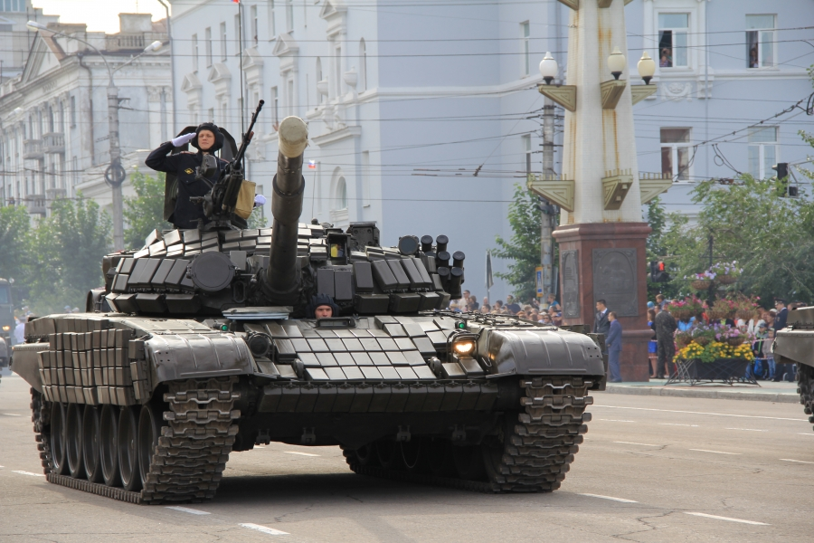

Cчитается самым результативным танковым асом Второй мировой войны. На его счету почти 170 танков, однако не все из его побед до сих пор являются подтвержденными.
За годы войны он уничтожил 126 танков в качестве наводчика (20 неподтвержденных), в качестве командира тяжелого танка - 42 танка противника (10 неподтвержденных).

День танкиста-
советский, российский, белорусский и украинский ежегодный профессиональный праздник танкистов и
танкостроителей, не имеющий фиксированной даты и отмечаемый обычно во второе воскресенье сентября(В 2020 году праздник выпадает на 13 сентября).
В торжествах принимают участие служащие танковых подразделений Вооружённых сил РФ по контракту и призыву, офицеры, курсанты, преподаватели профильных
учебных заведений. Праздник отмечается всеми, кто когда-либо был в рядах этого рода войск, конструкторы, инженеры, работники заводов и
научно-исследовательских институтов, разрабатывающих бронетехнику. К мероприятиям присоединяются их родственники, друзья, знакомые и близкие люди.
В этот день проводятся праздничные мероприятия и концерты, на которых служащие принимают поздравления.
Им вручают знаки отличия: медали, грамоты, награды, вносят благодарственные звания в личные дела.
К празднику приурочивают повышения в должностях и званиях.
История праздника
Изобретение бронированных машин относят к началу ХХ века, над ними работали одновременно несколько стран.
В Российской Империи наш соотечественник
Василий Менделеев
Василий Дмитриевич Менделеев (1886, Санкт-Петербург — 1922, Екатеринодар)
— русский инженер, изобретатель и создатель проекта первого российского танка под названием «Бронеход», сын знаменитого русского химика Д. И. Менделеева.
, сын известного русского химика, в период с 1911 по 1915
годы проектировал тяжелую бронированную машину, которая вполне могла стать прототипом современных танков. Причем делал
он это на голом энтузиазме, в свободное от основной работы время. Однако армия и власти идеей не заинтересовалась, что
не отменяет того факта, что Менделеев-младший первым в стране и одним из первых в мире предложил проект сверхтяжелого танка.
Впервые танки применила Англия в 1916 году во время Первой Мировой войны в Битве на Сомме, прорвав таким образом оцепление
противника с минимальными потерями для собственной армии. Это достижение, конечно, заставило остальные страны задуматься о
новом подходе к ведению войн.
Зиновий Колобанов
Подвиг танкиста Зиновия Колобанова вошел в Книгу рекордов Гинесса. 20 августа 1941 года 5 танков
роты старшего лейтенанта Колобанова уничтожили 43 немецких танка, 22 из них было подбито в течении получаса.
Отечественное танкостроение берет начало уже в СССР. Днем рождения первого русского танка считается
31 августа 1920 года - именно в этот день в цехах Нижнего Тагила завершили производство Танка М (малого), который являлся копией
одной из английских машин. Танкостроение в Советском Союзе стало развиваться быстро, что впоследствии оказало огромное влияние на
исход Второй Мировой войны. И уже в 1946 на Красной площади прошел парад с участием танковой дивизии. В том же 1946 году Указом Президиума
Верховного Совета СССР был учрежден праздник День танкиста. Во всем Союзе его отмечали 11 сентября - в память об успехах российских танковых
войск во время Восточно-Карпатской операции 1944 года. Дата праздника сохранялась вплоть до 1980 года - каждый год 11 сентября проводились
праздничные мероприятия в честь танкистов и всех причастных к этой военной отрасли. Затем очередным Указом Президиума Верховного Совета
СССР была установлена новая дата - второе воскресенье сентября. В этот день танкистов поздравляют и до сих пор - в современной России праздник
был закреплен Президентом РФ в 2006 году.
Традиции праздника
День танкиста - международный праздник, его отмечают в России и странах бывшего СССР:
Белоруссии;
Украине;
Казахстане;
В этот день поздравляют не только служащих танковых войск, но и танкостроителей, инженеров и техников.
В советское время, особенно в послевоенные годы, в честь праздника проходили торжественные парады танковых колонн, запускали салюты.
В наше время День танкиста в России празднуется хоть и без размаха, зато с вниманием к виновникам торжества. Военных танковых дивизий
поздравляют на федеральном уровне, на региональном, и, конечно же, в своих частях. Руководство обращается к служащим с торжественной
речью, а особо отличившихся награждает. В городах, где расположены военно-технические заводы и военные части, проводятся парады, концерты
и фестивали, в эфире местного телевидения показывают фильмы о танкистах. Завершает праздничный день, как правило, праздничный фейерверк.